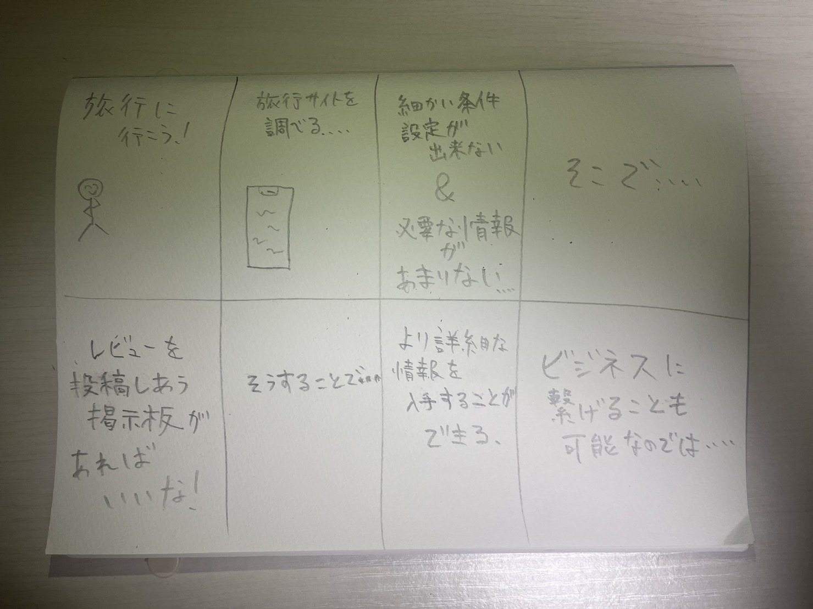

世の中にある存在課題の発見
1.自分が感じた疑問
長期休みなどで旅行に行く人はとても多いと思います。
私も旅行は好きでなので遠方へ旅行に行くこともありますが、宿の確保など計画を立てることは必要です。
しかし、旅行サイトが扱いづらくて自分たちの条件に合わせて調べたにくかったり、欲しい情報が不足しがちだったり・・・
なんてことを経験して思ったので、レビューを載せ合う掲示板があればいいなと思いました。
より詳細な情報を入手できるのに加えて、ビジネスに繋げることができるのではないかと考えました。
2.自分で考えたアイデアスケッチ
